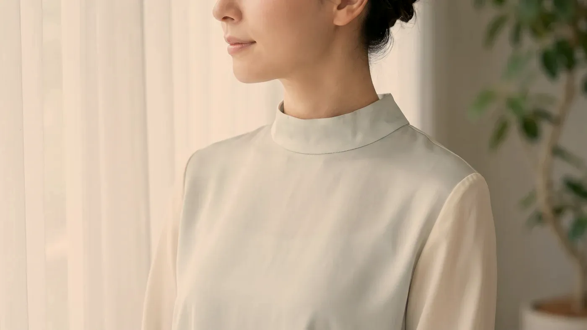

Bölge rehberi · Boyun ve dekolte
Boyun, yüzün devamı değil; kendi planı olan bir bölgedir.
Boynun ve göğüs üstünün derisi yüzdekinden ince, yağ bezleri daha seyrek ve deriyi taşıyan dokular daha zayıftır. Bu yüzden halka şeklindeki çizgiler, gevşeme ve güneşin bıraktığı kahverengi–kırmızı lekeler burada daha erken görünür. Yüzünüz için seçilen ayarı ve miktarı buraya aynen taşımak yerine bu bölgeye özel, daha yumuşak bir plan yaparız.

Temsilî görsel · yapay zekâ ile üretildiBölge farkı
Boyun derisini yüzden ayıran ne?
Boyun ve göğüs üstünde deri, yüze kıyasla gözle görülür biçimde incedir. Yağ bezleri daha azdır, bu yüzden deri kendi nemini korumakta zorlanır; altındaki yastık da ince olduğundan kasların çekişi ve gevşeme hemen yüzeye yansır. Üstelik boyun gün boyu eğilip dönerken dekolte, yazın güneşe en çok açılan ama en seyrek koruyucu sürülen yerlerden biridir.
Yüzde sorunsuz geçen bir işlem aynı ayarla boyna yapıldığında şişlik daha uzun sürebilir, morluk daha kolay çıkabilir ve iyileşme düzensiz ilerleyebilir. Bu nedenle boynu ve dekolteyi yüz planının bir ekine dönüştürmeyiz; kendi ölçüleriyle ayrı ele alırız.
Bölge atlası
Boyun ve dekoltede hangi değişiklikler görülür?
Karşılaştığımız tablolar üç grupta toplanıyor. Çoğu kişide bu gruplardan ikisi ya da üçü bir arada bulunur; plan da bu karışıma göre biçimlenir.
 Temsilî görsel · yapay zekâ ile üretildi
Temsilî görsel · yapay zekâ ile üretildi
Halka çizgiler ve dikey bantlar
Boynun önünde yatay uzanan iki–dört çizgi pek çok kişide vardır. Kiminde bunlar doğuştan gelen katlanma yerleridir, kiminde ise yıllar içinde derinleşmiş kırışıklardır; hangisi olduğunu muayenede ayırırız, çünkü yaklaşım buna göre değişir.
Konuşurken ya da çenenizi öne uzattığınızda boynun iki yanında kabaran dikey şeritler ise deri altındaki yaygın, ince bir kastan kaynaklanır. Sarkma ilerlemişse ameliyatsız yöntemlerle sağlanabilecek değişim kısa sürede sınırına ulaşır.
Güneşin göğüs üstündeki izi
Dekoltede kahverengi lekeler ile ince kırmızı damarlar çoğu zaman yan yana görülür. Lekenin ve damarın ele alınışı farklıdır ve genellikle ayrı seanslar gerektirir; lekelerle ilgili genel bilgiyi aşağıdaki bağlantıda bulabilirsiniz.
Kuruluk ve incecik kırışlar
Yağ bezleri az olduğu için göğüs üstü derisi kolayca kurur; yan yatarak uyuyanlarda göğüslerin arasında ince, dikine çizgiler de oluşabilir. Burada dolgunluk kazandırmaya değil, derinin kalitesini ve nem tutmasını iyileştirmeye çalışırız.
Uygulamalar
Boyun ve göğüs üstü için hangi seçenekler var?
Bu bölgede ilk hedef dolgunluk kazandırmak değil, derinin kendisini güçlendirmektir. Muayenede ortaya çıkan tabloya göre tek bir seçenekle yetinilebilir ya da birkaç seçenek aylara bölünerek sıralanabilir; aynı gün birkaç yöntem üst üste konmaz.
Gençlik aşısı (skinbooster)
CİLT KALİTESİBirkaç saat–1 gün→Mezoterapi
CİLT KALİTESİBirkaç saat–1 gün→Somon DNA ve polinükleotid
CİLT KALİTESİMuayenede belirlenir→İğnesiz mezoterapi
CİLT KALİTESİMuayenede belirlenir→Altın iğne radyofrekans
ENERJİ2–3 gün şişlik→HIFU
ENERJİ2–3 gün şişlik→Botulinum toksin
KAS HEDEFLİMuayenede belirlenir→Pico lazer ile leke
ENERJİMuayenede belirlenir→
Gençlik aşısı (skinbooster)
Deriye hacim eklemeden su tutma gücünü artırmayı hedefler; bu bölgede sıklıkla ilk düşünülen seçenektir.
Sayfasına git →Süreç
Boyun ve dekolte için plan hangi sırayla yapılır?
İlk görüşmenin sonunda işlem yapılacağını varsaymayın. Bu bölgede adımların hangi sırayla atıldığı, hangi yöntemin seçildiği kadar önemlidir.
- İnceleme: çizgilerin doğuştan mı olduğu yoksa sonradan mı derinleştiği, gevşemenin ne düzeyde olduğu ve renk değişikliğinin leke mi damar mı olduğu belirlenir.
- Öykü: kullandığınız ilaçlar, süregen hastalıklar, gebelik, bu bölgeye daha önce yapılan işlemler, kalın iz (keloid) eğilimi ve bilinen aşırı duyarlılıklar not edilir.
- Sıralama: önce güneşten korunma ve nem, ardından deri kalitesi, gerekiyorsa en son enerjiyle çalışan cihazlar. Bir seansta tek yöntem kullanılır.
- Kontrol: iki–dört hafta sonra bölgeye yeniden bakar, devam edip etmeyeceğimize ilk tepkiye göre karar veririz. Ayrıntılar için uygulama sonrası takip sayfasına bakabilirsiniz.
“Yarar sağlamayacağını düşündüğümüz bir işlemi plana eklemeyiz; bazen en doğru öneri daha azını yapmaktır.”
- Gebelik ve emzirme: bu süreçte iğneyle ya da cihazla yapılan işlemlere başlanmaz.
- Bölgede etkin bir sorun: enfeksiyon, alevlenmiş egzama, güneş yanığı ya da açık yara varsa bölge iyileşene kadar beklenir.
- Yeni güneşlenme: lekeye yönelik işlemlerde çoğunlukla en az dört hafta ara verilir.
- Kalın iz (keloid) eğilimi: göğüs üstü bu tür izlerin kolay oluştuğu yerlerdendir; seçenekler daralır.
- Boyuna yapılmış ameliyat ya da ışın tedavisi: tedaviyi yürüten hekimin görüşü alınmadan plan yapılmaz.
- Kanamaya yatkınlık ya da kan sulandırıcı ilaç: ilacınızda bir değişiklik gerekirse bu ancak ilacı veren hekimin onayıyla konuşulur.
- Bilinen aşırı duyarlılıklar: lokal anestezik krem, antiseptik ya da daha önce kullanılan bir ürüne karşı yaşadığınız tepkiyi muayenede anlatın.
- Yutkunurken zorlanma ya da boyun kaslarında güç kaybı: kası gevşeten uygulamalar bu durumda seçilmez.
Muayenehanede yalnızca hekimimizin uzmanlığı ve Sağlık Bakanlığı onaylı sertifikasının kapsadığı işlemler yapılır. Bu çerçevenin dışında kalan bir istekte işlem yapmaz, sizi ilgili uzmanlık dalına yönlendiririz. Nedenini neden bazı işlemleri yapmıyoruz sayfasında açıkladık.
Sonrası
İşlemden sonraki günlerde neler olur?
İlk günler
Boyun sürekli hareket ettiği ve giysiyle sürtündüğü için işlemden sonra yüze göre daha uzun süre hassas kalabilir. İlk iki gün bölgeyi ovmamanız, dar yakalı ya da sert kumaşlı giysiler giymemeniz ve kolyenizi bir süre çıkarmanız iyileşmeyi kolaylaştırır. Sıcak duş, sauna, hamam ve ağır spor da genellikle bu iki günün sonrasına bırakılır.
Güneş koruyucu burada planın ayrılmaz bir parçasıdır ve kışın da kullanılmalıdır. Boyun ve dekolte yüzden daha sık nemlendirme isteyebilir; hangi ürünü kullanacağınızı muayenede birlikte seçeriz. Randevu öncesinde işinize yarayacak notları hazırlık listesi sayfasında bulabilirsiniz.
Gerçekçi beklenti
Ameliyat gerektirmeyen yöntemler bu bölgede yüze kıyasla daha küçük bir değişim sağlar. Yıllardır yerleşmiş derin halka çizgilerinin tümüyle silinmesini beklemek gerçekçi olmaz; ulaşılabilecek nokta, çizgilerin daha yumuşak görünmesi ve derinin daha düzgün bir doku kazanmasıdır. Bu değişimin ne kadar süreceği kişiden kişiye farklıdır.
Belirgin deri fazlalığı ve ileri sarkma olduğunda ameliyatsız yöntemlerin katkısı yetersiz kalır; böyle bir tablo görürsek sizi ilgili cerrahi dala yönlendiririz. Genel yaklaşımımızı nasıl çalışıyoruz sayfasında anlattık.
Boyundaki kas gevşetici uygulamadan sonra yutkunmada zorlanma, ses kısıklığı ya da nefes darlığı; cihazla yapılan işlemlerden sonra deride kabarcık ya da açık yara, yayılan kızarıklık, akıntı ya da ateş; her işlemden sonra giderek artan şiddetli ağrı, hızla kabaran şişlik ya da deride beyazlaşma–morumsu ağ görünümü olursa kontrol gününü beklemeyin. Bizi 0539 933 08 08 numarasından hemen arayın; telefonla ulaşamazsanız 112 Acil Çağrı Merkezi’ni arayın ya da en yakın hastanenin acil birimine başvurun.
Soru–cevap
Aklınızdaki soruyu seçin, yanıtı yanda okuyun
Bir adım ötesi
Önce bölgenizi tanıyalım, sonra karar verelim
Boyun ve dekoltede hangi adımın önce atılacağı, hangi yöntemin seçileceği kadar önemlidir. Bölgenize birlikte bakmak için Bakırköy muayenehanemizden randevu talep edebilirsiniz.
Metni hazırlayan ve tıbbi açıdan gözden geçiren: Uzm. Dr. Rahmi Cebeci (Aile Hekimliği Uzmanı · Medikal Estetik Sertifikalı).
Buradaki anlatım herkese yöneliktir; size özel bir teşhis ya da tedavi planı sunmaz, muayenenin yerini tutmaz. Her uygulamanın etkisi kişiye göre farklı olur.